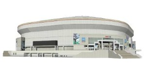
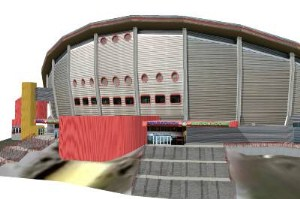

Sketchup Stadiums & Arenas
The following below are Google Sketchup 3D models of stadiums and arenas around North America and the world. They are available free of charge. Click on the link below the description to download models.
| Auerbach Dome | A large basketball and hockey dome named for the legendary Celtics coach Red Auerbach. The stadium’s large roof and heavy scoreboard are held up by a large half-arch. The dome has glass skylights that allow for an open view of the sky, and during the day, let sunlight into the massive venue. The dome seats 60,000 fans for basketball and hockey, and can also be used for concerts. This is my first basketball/hockey stadium.Google Sketchup 3D warehouse details page. |
| Edward jones Dome | The Edward Jones Dome (more formally known as the Edward Jones Dome at America’s Center) and previously known as The Trans World Dome or TWA Dome is a multi purpose stadium in St. Louis, Missouri, and home of the St. Louis Rams of the NFL. It was constructed largely to lure an NFL team back to St. Louis, and to serve as a convention center. The Dome provides multiple stadium configurations that can seat up to 70,000 people. Seating levels include: a private luxury suite level, a private club seat and luxury suite level, a concourse level (lower bowl) and terrace level (upper bowl). The dome was completed in 1995.Google Sketchup 3D warehouse details page |
| Gold Dome |
Built in 1958, the Gold Dome was based on R. Buckmister Fuller’s futuristic geodesic dome design. It was the fifth geodesic dome built in the world and the first one made of gold anodized aluminum. Originally built for Classen State Bank, the building was designed by the Bailey, Bozalis, Dickinson and Roloff architectural firm with Robert B. Roloff as chief designer. The building was a radical departure from bank designs of the past and designed to reflect Oklahoma’s prosperous future. In 2003, The Gold Dome was purchased by Dr. Irene Lam, an Oklahoma City optometrist and civic leader. Dr. Lam partnered with Norman architect Mike Kertok, Ron Rocke and Mark Gifford of Macinni Construction. Their collaboration produced a facelift to the structure while preserving the former bank’s golden past. The Gold Dome is now listed on the National Register of Historic Places, ensuring that the landmark will be preserved for future generations.
|
Hubert H. Humphrey Metrodome |
Opened in 1982, the Metrodome is the home NFL team Minnesota Vikings. Its roof is a lightweight fiberglass dome supported by air pressure supplied by large fans. Modeled by Mason Thrall.Google Sketchup 3D warehouse details page. |
| ISS Dome | The ISS Dome is a multifunctional arena in Dusseldorf, Germany, and was opened in 2006. The home of the DEG Metro Stars out of the German Ice Hockey League DEL has got a capacity of 13,400.Google Sketchup 3D warehouse details page |
| Kyocera Dome Osaka (Osaka Dome) |
Kyocera Dome Osaka (Osaka Dome) is a baseball stadium located in Osaka, Japan. Beginning in 1997, the stadium was the home field of the Kintetsu Buffaloes. In 2005, the stadium became one of the homes of the Orix Buffaloes as a result of the merger of the Orix Blue Wave and Kintetsu Buffaloes.
|
| Lucas Oil Stadium |
Lucas Oil Stadium (LOS) is a multi-purpose sports stadium in Indianapolis, Indiana. The stadium celebrated its grand opening on August 24, 2008, in a game against the Buffalo Bills and its ribbon-cutting ceremony August 16, 2008. It replaced the RCA Dome as the home field of the NFL’s Indianapolis Colts. The stadium is scheduled to host Super Bowl XLVI in 2012.
|
| Mellon Arena |
The Mellon Arena, completed in 1961, was originally constructed as a performance center for the Pittsburgh Civic Light Opera. The poor acoustics of the unique design forced the opera out soon after and the arena became home to the Pittsburgh Penguins hockey team. This building was constructed with a retractable dome roof, with 6 moving panels. With additions of box seats, scoreboards and balconies, the roof can no longer be completely opened. The building has been used for many events from sports to concerts over its lifetime, and currently there are plans to replace it with a larger capacity stadium. Model created by Adam Hecht.
|
| o2 / Millennium Dome |
This is the millenium dome. The naming rights have recently been given to British Phone company, o2 and it has been made into a stadium for concerts and indoor sports. – It is expected to hold alot of indoor events during 2012 Olympics in London. On my model i have included the stadium on the inside so please take a look –
|
| Ōita Stadium |
Ōita Stadium, Big Eye stadium, is a multi-purpose stadium in the city of Ōita in Ōita Prefecture on Kyushu Island in Japan. The stadium is usually called as Kyushu Oil Dome (九州石油ドーム), sponsored by the Kyushu Oil. It is primarily used for football, and is the home field of J. League club Oita Trinita. It was designed by the famous architect Kisho Kurokawa, and built by KT Group, Takenaka Corporation. Ōita Stadium opened in May 2001 and originally had a capacity of 43,000. The stadium hosted 3 games during the 2002 FIFA World Cup.
|
| RCA Dome | Home of Indianapolis Colts NFL franchise, the RCA Dome is located in Indianapolis, Indiana. Part of the Indiana Convention Center, the RCA Dome was completed in late-1983 at a cost of $82 million (with the costs split evenly between private and public money).The Dome was finished a year before the Colts made their infamous move to Indianapolis from Baltimore in 1984. The RCA Dome is currently the smallest stadium in the NFL.Google Sketchup 3D warehouse details page |
| Reliant Astrodome |
The Astrodome, originally called Harris County Domed Stadium, was completed in 1965. It was the first baseball stadium to be cover by a roof. The dome was initially made of semitransparent panels that allowed in enough sun light for grass to grow on the field. However, the panels had to be painted and artificial turf installed when it was discovered that fly balls were difficult to see against the dome.
|
| Rogers Centre |
The stadium of the Major League Baseball team the Toronto Blue Jays and the Canadian Football team the Toronto Argonauts, the Rogers Centre occupies a prominent location near the city’s landmark CN Tower. It was designed by architects Rod Robbie and Micheal Allen. Model created by Mason Thrall.
|
| Saddledome |
The Pengrowth Saddledome is located in Calgary, Canada. It is home to the NHL’s Calgary Flames, the WHL’s Calgary Hitmen, and the NLL’s Calgary Roughnecks. It can hold more than 17,000 People. The Pengrowth Saddledome is the center for most big ticket shows in Calgary.
|
| Sapporo Dome | The Sapporo Dome, designed by Hiroshi Hara, opened in 2001. It has enough seats for 41,580 attendees for events. The stadium has a retractable playing field (ie it can be converted from a turf baseball field into a grass field for football!) The dome is home field to Hokkaido Nippon Ham Fighters (baseball club) and Consadole Sapporo (football club). Google Sketchup 3D warehouse details page |
Superdome (New Orleans) |
The Louisiana Superdome located in the heart of the New Orleans Central Business District is a large, multi-purpose sports and exhibition facility. Home to the NFL’s New Orleans Saints, the Superdome is the largest fixed dome structure in the world. In the aftermath of Hurricane Katrina in 2005, the New Orleans Superdome attracted international attention at it provided shelter to thousands of evacuees.
|
| Tropicana Field |
The stadium of the Tampa Bay Devil Rays was constructed in 1990 to try to lure the White Sox to the Tampa Bay Region. While the Sox were not lured, in 1998 the MLB granted the region a franchise. Before they started playing there, however, the stadium went through a massive renovation. Designed by architects HOK Sport. Model created by Mason Thrall.
|
| Valley Forge Biosphere Dome | This is one of six Biosphere domes that Valley Forge carried in the movie Silent Running. The creator also has modeled the whole ship and posted it here.Google Sketchup 3D warehouse details page |